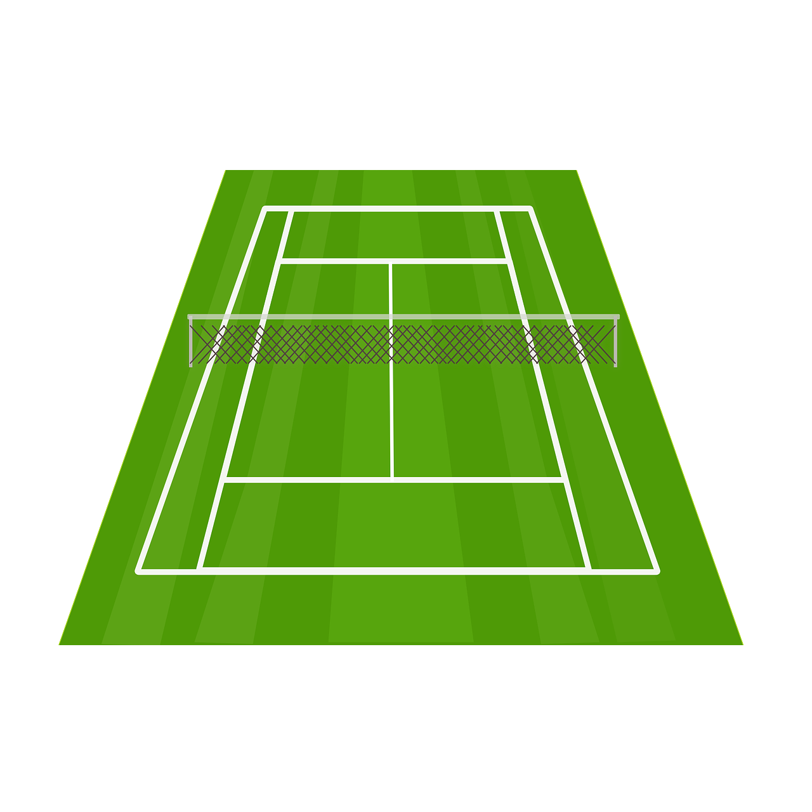

¿Porqué jugar al tenis?
- Ayuda a quemar grasas y mejorar salud cardiovascular
- Mejora la coordinación
- Reduce el estrés
- Se puede jugar a cualquier edad
- Los implementos deportivos para jugar no son costosos
Dale una oportunidad al tenis
Primer Servicio no pretende que te conviertas en un super fanático al tenis, pero que sí le des una oportunidad!
El vídeo de la derecha no fue creado por el autor de esta página web. El vídeo fue publicado por paulo eduardo y está disponible en este enlace de YouTube.


Dale click a las partes de la cancha para aprender sobre ellas.

Si quieres aprender más sobre cómo jugar tenis, visita ésta página
Selecciona tu ciudad:
Para más información, visita la página de la Liga de Tenis de Bogotá